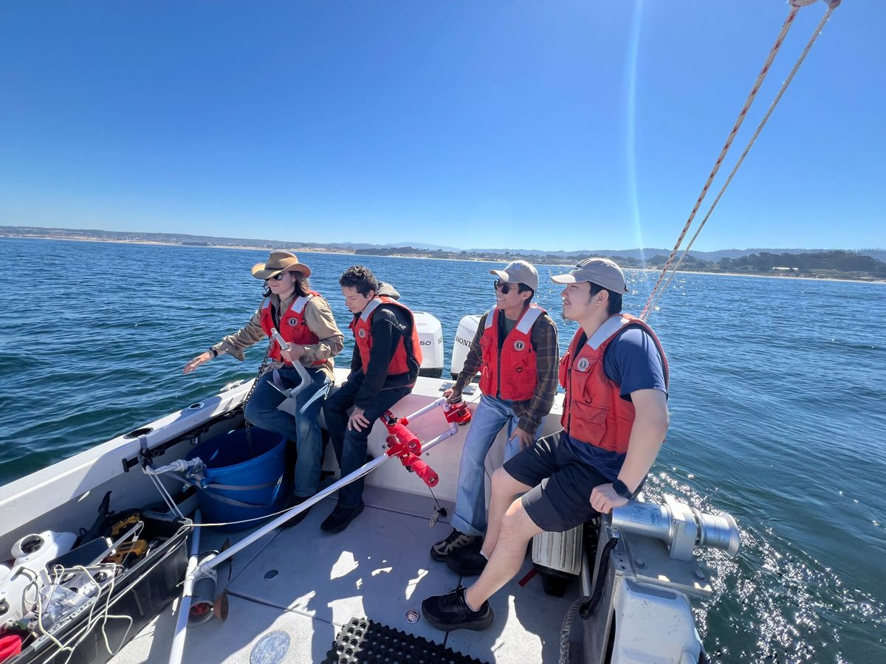
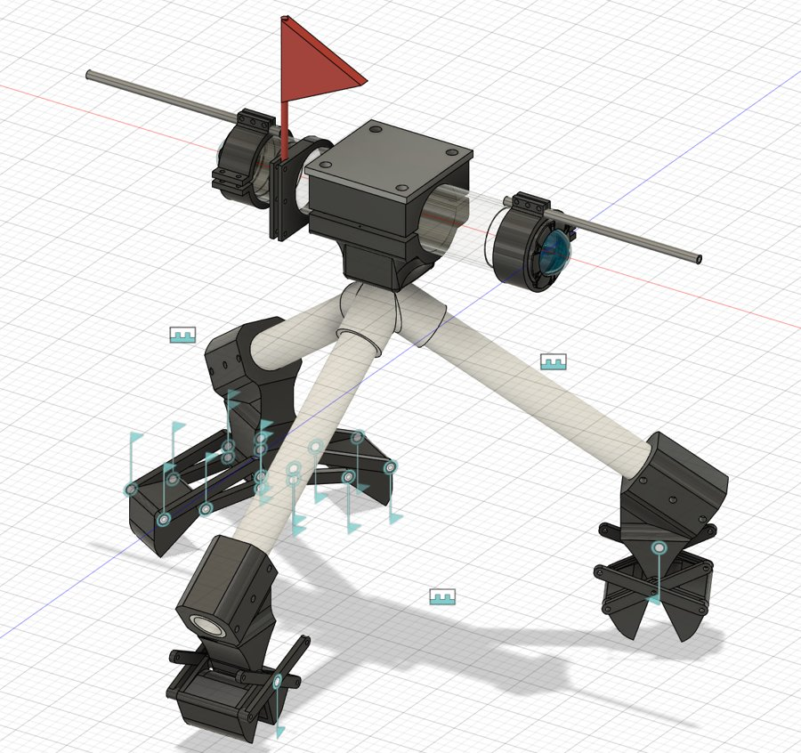
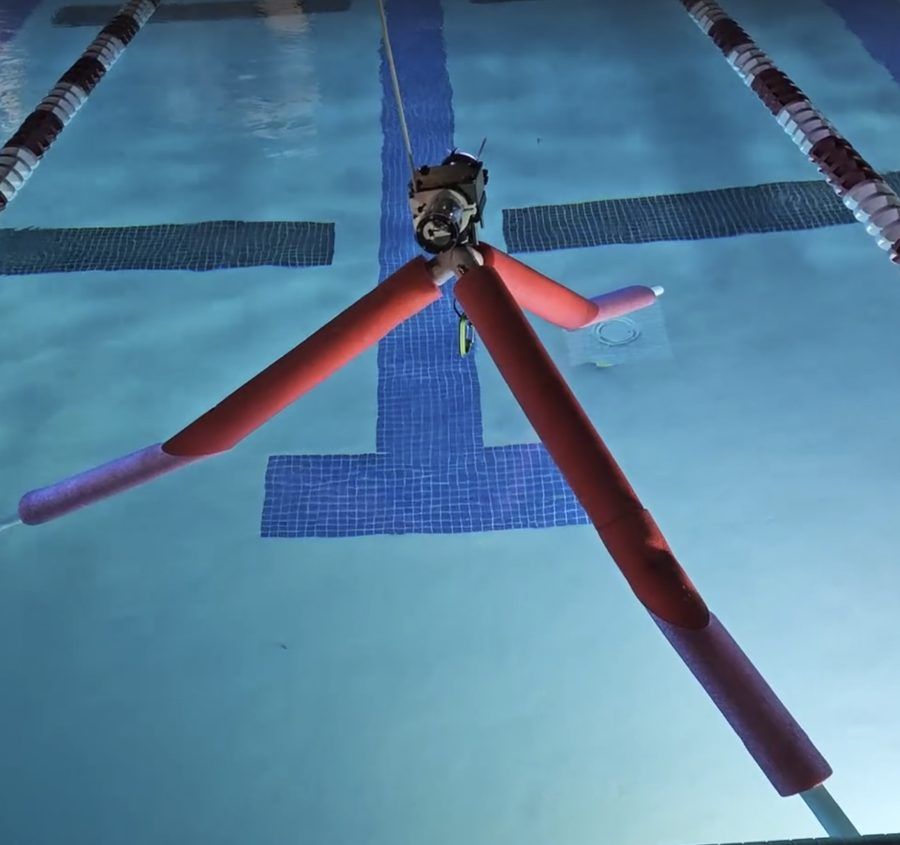
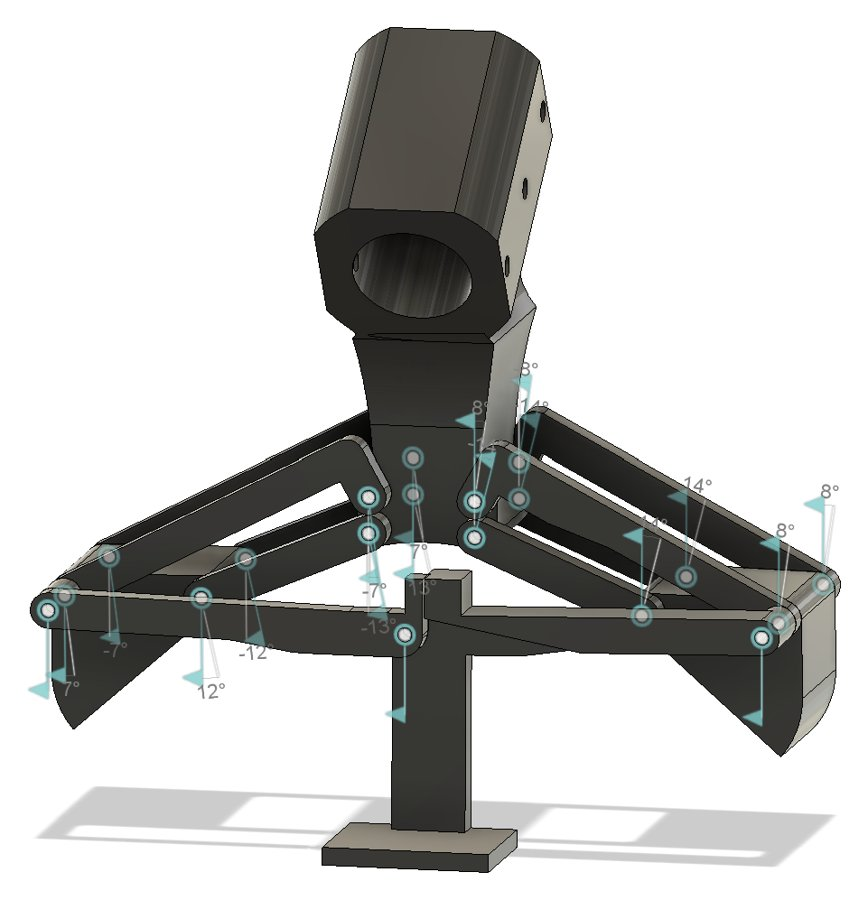
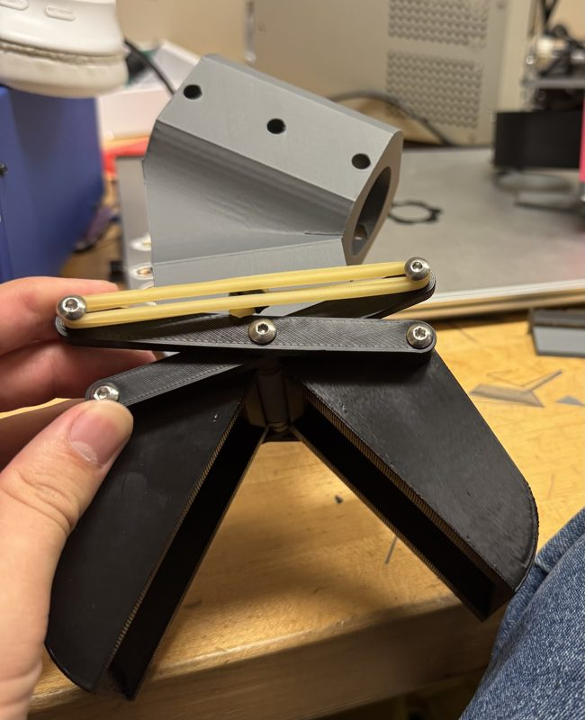
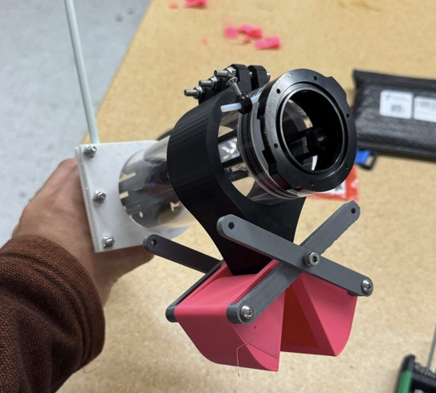
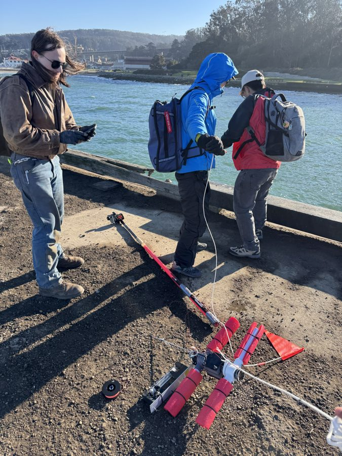
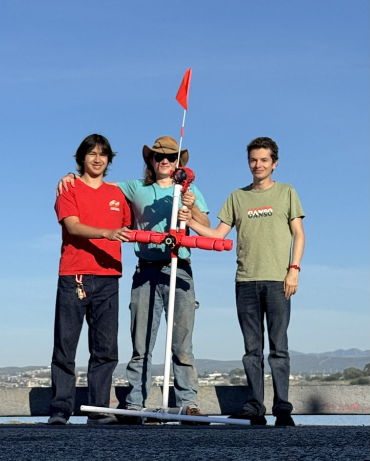
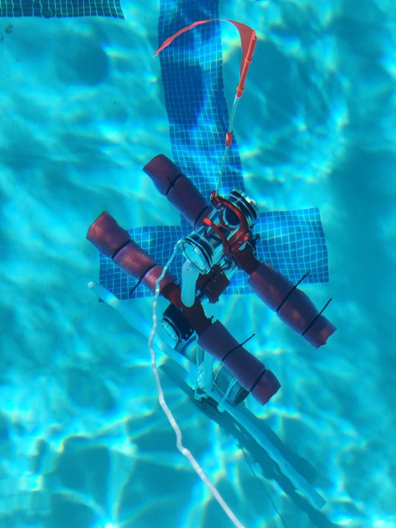
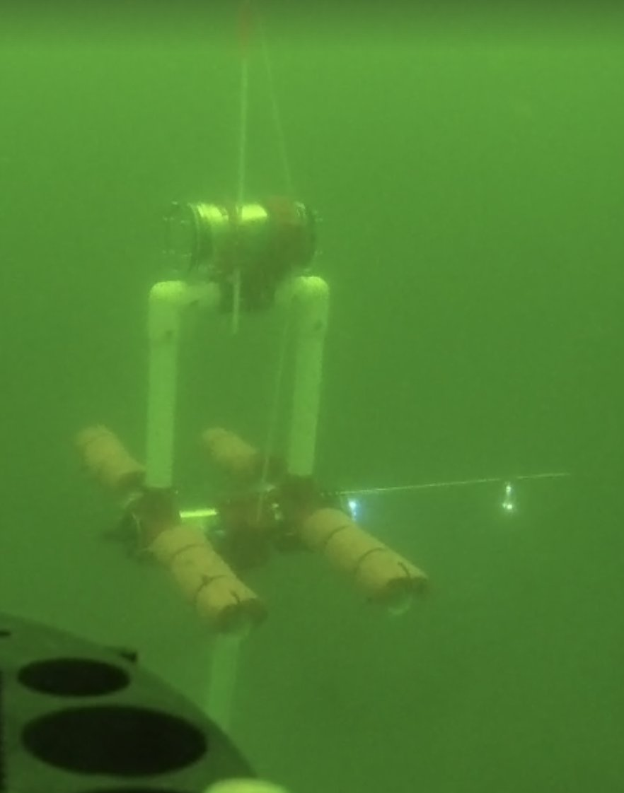

I co-lead the Europa subsection of SSI (Stanford Student Space Institute)! We are designing a low-cost (<$5k) open source
benthic lander for ocean trench level depths to be used as a research platform for scientists.
Benthic Landers are scientific research platforms dropped to the bottom of the ocean,
where they sit for a couple hours then drop a weight and float back up. Deep sea benthic
landers often cost upwards of $300,000, a problem we are trying to fix.
Our goal is to make a generalized research platform for deep ocean research that any scientist
can easily make for a reasonable price.
There are a couple main parts to the project, the mechanical structure and equipment, the electronics,
the biology/scientific aspect, and the computer science. I lead the mechanical design of the lander! The mechanical design
has a couple parts: the structure, timed-releases, and various sampling equipment.
The structure is the part most effected by pressure. The most important part of this design is to make a strong, rigid structure
while also keeping the bouyancy such that it always stays upright. Because of this, we design long forms with our glass/acrylic
tube that can withstand pressure on top. We have mutliple of these, one of which that holds the electronics and another higher
structure that sends out a radio/gps signal when at the top. It is the job of the sturcture to make sure the radio/gps tube is
floating high above the water and will not tip in the waves.
The timed-releases are in charge of releasing the weights and many of the water/soil/dna captures. They are galvanic-timed
releases, which means they are made with a link of metal that corrodes in sea water for a consistant amount of time (ex: 2 hours).
The mechanical team is in charge of pre-soaking many of the releases so that they trigger at certain times, so the timeline of events
looks like:
dropped in water -> sinks to bottom -> water/DNA/soil captures trigger -> weight releases and lander floats back to the top
The most mechanically complex part of the benthic lander are the various soil/DNA/water capture mechanisms. Because of the extreme
pressures, we cannot use any electronics when designing these. Therefore, they are all timed-release or spring-driven. The most developed
was the soil claw, which I made multiple prototypes of both spring-driven and timed-release versions. We also made two versions of a timed-release water capture
tube and are currenely working on a pressure-driven DNA capture device.


We spent the past year (first year of the club) making a proof of concept benthic lander
to make sure we have all of the mechanisms and concepts working. We used a small, clear acrylic
tube that was rated for 1000m. We also used pvc pipes for the structure (instead of aluminum which we
will eventually use in the deep sea version).
We learned many things from our weekly early tests in the Stanford pool. The biggest was issues with bouyancy and
stability of the whole lander. We had positioned the main center of bouyancy underneath the center of weight, which
made the lander tip easily (messing up the gps). However, we learned many things and also got the galvanic
timed-releases working consistantly!
Another place where we learned a lot was the material we made the structures out of. We found out that we can easily prototype with
3D printed parts as long as they are printed with a low infill and holes are drilled in them (allowing water to flood the part).
The part we changed the most was the structure underneath. We had many variations, from legs to an H configuation to long tubes downwards.
The structure underneath deteremined a lot about the bouyancy. The weight needed to be placed underneath but even after the weight was dropped,
the center of mass still needed to stay underneath the center of bouyancy, which required much trial and error. Another important consideration
was the placement of the soil/water samplers (we didn't have DNA at the time). They needed to have enough room for them to work but must be placed
underneath the center of bouyancy (because they were heavy).



The claw was one of the more complex design problems on the lander (and it was my initial role!). I intially prototyped a couple versions, including simple hinge jaws and also more complex 4-bar jaws that were designed to sweep soil off the floor more efficiently. I also played around with mechanisms that would not be spring loaded but rather pulled shut when the lander dropped the weight and started to float back up. However, with testing I found that the easiest and most reliable mechanism was a simple galvanic timed-release.




Over the period of a year we tested extensively in the pool and occasionaly in the ocean. When we would test in the pool we would not test timed-releases
but we would video and collect water pressure data. We designed a setup within the tube where we can measure water pressure and therefore estimate how deep
we are to ~10ft. We would test more or less every weekend in the pool whatever advancement we had made that week.
The interesting tests were the ocean tests though. There we would test all the mechanisms we could. The first test we did, we went to the SF Bay,
which was a mistake. The water was very wavey, cold, and there was no visibility. We also were freezing in the high winds (we were right under the Golden Gate
Bridge). However, the lander preformed very well! All video function worked perfectly and the timed-releases (it was the first test of them) worked all according
to plan.
The next tests were much better. We emailed MBARI (Monterey Bay Aquarium Research Institute), and they took us out on thier boat to
test in deeper and clearer waters. We also integrated some bait hooks right in front of our cameras to hopefully capture some fish.
The first tests we simply did off a pier (which also worked very well), and then we went on the boat for those tests. The boat tests worked
perfectly according to plan, we were able to collect water pressure, water temperature, video footage, and water samples. The weight release
also worked as planned! Unfortunately we had a bad kind of bait and no fish wanted to be near us.
The future of the Europa team is looking very exciting. At the end of last year, we decided we had tested the proof of concept enough and we bought a sphere rated for 12,000m (deeper than the Mariana Trench). We will be developing a aluminum structure and working the electronics around the new housing. Perhaps the biggest change is redesigning all of the claws and soil/water/DNA collectors. We have many ideas how we use the changing pressures of going deep into powering DNA collectors and water samplers.